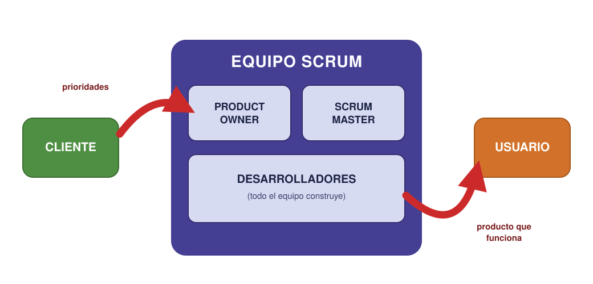
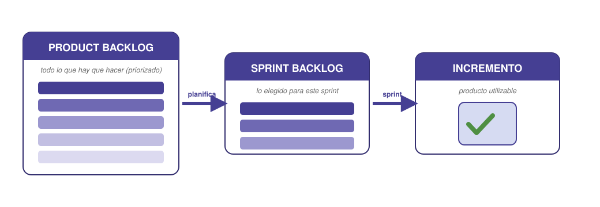

Contenido
Sesión 6
Por qué surgió lo “Agile”
La planificación clásica (Gantt, PERT/CPM) funciona muy bien cuando el proyecto está bien definido desde el principio: sabes qué hay que hacer, en qué orden y cuánto dura cada cosa. Pero muchos proyectos no son así. Aparecen ideas nuevas a mitad de camino, el usuario pide otra cosa distinta a la que dijo, una solución no funciona y hay que rehacerla. En esos proyectos, un plan cerrado en piedra se queda anticuado en cuanto se empieza a trabajar.
Las metodologías ágiles (en inglés Agile) nacieron para eso. En lugar de planificarlo todo al detalle al principio, trabajan en ciclos cortos: el equipo construye algo útil, lo enseña, recibe opiniones y se adapta para el siguiente ciclo. Se planifica menos a largo plazo y se corrige más a menudo.
El Manifiesto Ágil (2001)
En 2001, un grupo de profesionales del software resumió esta forma de trabajar en el Manifiesto Ágil. No es una norma técnica, sino una declaración de prioridades. Sus cuatro valores dicen que, sin renunciar a lo de la derecha, se valora más lo de la izquierda:
- Individuos e interacciones, más que procesos y herramientas.
- Producto que funciona, más que documentación exhaustiva.
- Colaboración con el cliente, más que negociar un contrato cerrado.
- Responder al cambio, más que seguir un plan rígido.
En la práctica esto se traduce en: entregas frecuentes, colaboración continua, equipos que se organizan solos y mejora constante.
Agile no es una sola metodología, sino una familia. Las dos más usadas son Scrum —al que dedicamos esta sesión y la siguiente, porque es el más extendido— y Kanban, que verás en la S8.
Scrum: la idea
Scrum es el marco ágil más extendido en la industria. Su idea central es trabajar en iteraciones llamadas sprints: ciclos cortos y de duración fija (normalmente de una a cuatro semanas) en los que el equipo coge un trozo del trabajo, lo termina por completo y entrega algo utilizable. Cuando el sprint acaba, se revisa lo hecho, se aprende de ello y empieza el siguiente. El proyecto avanza así a base de pequeños pasos completos, no de una entrega final gigante.
Iteración vs. fase
En la planificación clásica el proyecto se divide en fases (primero todo el diseño, luego toda la fabricación, luego todas las pruebas). En Scrum se divide en iteraciones: en cada sprint hay un poco de diseño, de construcción y de prueba, y al final de cada uno hay algo que se puede enseñar y usar. Iterar significa repetir un ciclo completo mejorando el resultado cada vez.
Scrum define tres cosas que conviene aprender por separado: roles (quién), artefactos (qué se produce y se mira) y eventos (cuándo se reúne el equipo).
Los tres roles
Scrum reparte las responsabilidades en tres roles. No son “jefes” unos de otros: cada uno cuida una parte distinta del trabajo. Y los tres forman un solo equipo, el equipo Scrum, que trabaja entre el cliente, que marca las prioridades, y el usuario, que recibe el producto:

| Rol | Cuida de… | Responsabilidades |
|---|---|---|
| Product Owner (dueño del producto) | el qué y el para quién | Representa al usuario o cliente. Decide qué es prioritario, mantiene la lista de trabajo ordenada por valor y aclara las dudas sobre lo que hay que conseguir. |
| Scrum Master | el cómo trabaja el equipo | Facilita el proceso: organiza las reuniones, quita los obstáculos que frenan al equipo y vela por que se respeten las reglas de Scrum. No manda sobre las tareas, ayuda a que fluyan. |
| Desarrolladores | el hacer | Las personas que construyen el producto. Se organizan solas: deciden cómo repartirse las tareas del sprint y se comprometen con lo que pueden terminar. |
En nuestro proyecto de clase
En un equipo pequeño, una misma persona puede asumir un rol de Scrum además de trabajar. Lo habitual en clase: alguien hace de Product Owner (vela por el objetivo del proyecto y las prioridades), alguien de Scrum Master (coordina y desbloquea), y todas las personas del equipo, incluidas esas dos, son desarrolladoras. Los roles se pueden rotar entre sprints.
Ojo con lo que leas por ahí
Hasta 2020, Scrum hablaba de un «equipo de desarrollo» dentro del equipo Scrum. La versión vigente de la Guía de Scrum eliminó esa separación —creaba una dinámica de «ellos y nosotros»— y ahora habla de desarrolladores: un solo equipo responsable del resultado. Si encuentras material que separa los dos equipos, está desactualizado.
Los artefactos
Los artefactos son los tres “objetos” que el equipo produce y consulta para saber qué hace y cómo va.
- Product backlog (pila de producto): la lista completa y priorizada de todo lo que hay que hacer en el proyecto. La mantiene el Product Owner. Lo más importante va arriba. Es un documento vivo: se añaden, quitan y reordenan cosas según se aprende.
- Sprint backlog (pila del sprint): el subconjunto de tareas que el equipo coge del product backlog y se compromete a terminar en el sprint actual. Es lo que el equipo tiene “entre manos” ahora mismo.
- Incremento: el resultado utilizable al final del sprint, es decir, la parte del producto ya terminada y que funciona, sumada a la de sprints anteriores. Cada sprint produce un incremento.

Cómo se relacionan
El product backlog es todo lo que falta. El equipo saca de ahí un trozo para formar el sprint backlog de este ciclo. Al terminar el sprint, ese trabajo se convierte en incremento (producto que funciona). Y se repite.
Cada artefacto lleva un compromiso
Una lista de tareas, por sí sola, no dice para qué se hacen. Por eso cada artefacto lleva asociado un compromiso: una frase corta que le da sentido y permite comprobar si se va por buen camino.
| Artefacto | Su compromiso | La pregunta que responde |
|---|---|---|
| Product backlog | Objetivo de Producto | ¿Hacia dónde va el proyecto entero? |
| Sprint backlog | Objetivo del Sprint | ¿Para qué sirve este ciclo? |
| Incremento | Definición de Terminado | ¿Cuándo podemos decir que algo está hecho de verdad? |
El más útil de los tres para vuestro proyecto es la Definición de Terminado. Es la lista de condiciones que algo tiene que cumplir para considerarse acabado, y la acuerda el equipo entero antes de empezar. Sin ella pasa siempre lo mismo: alguien dice «ya está» y resulta que faltaba probarlo, o documentarlo, o que nadie lo había revisado.
Ejemplo de Definición de Terminado
Para el equipo del huerto, una tarea está terminada cuando: (1) funciona en el móvil de una persona del equipo, (2) otra persona distinta la ha probado, (3) está anotada en el diario de equipo. Tres condiciones, ni una más. Corta y comprobable: si no cabe en una línea, no la vais a usar.
Tarea del proyecto
Vuestro backlog y vuestros roles
TRABAJO EN EQUIPO una sola entrega por equipo
Con vuestro proyecto I+D+i, añadid a la plantilla del plan de proyecto (enlace en la portada), en la fase de Scrum:
- Product backlog: la lista priorizada de todo lo que hay que hacer en vuestro proyecto. Lo más importante, arriba.
- Reparto de roles de Scrum: quién hace de Product Owner y quién de Scrum Master (recordad: el resto del tiempo, todas las personas del equipo desarrolláis).
- Definición de Terminado: acordad entre todos las tres condiciones que tendrá que cumplir una tarea para darla por acabada. La usaréis en la S8, cuando montéis el tablero.
Ejercicios
Recuerda
TRABAJO INDIVIDUAL cada persona entrega el suyo
Resuelve primero en el cuaderno y luego pasa tus respuestas a tu copia de la plantilla en Drive (la que creaste desde la portada). Al terminar la unidad, descarga la plantilla en PDF (Archivo → Descargar → Documento PDF) y súbelo a la tarea Ejercicios de la unidad de Moodle. La tarea está abierta desde la primera sesión, pero no pulses «Entregar» hasta la última: es un solo documento con los ejercicios de las nueve.
- Explica con tus palabras la diferencia entre product backlog y sprint backlog.
- Asocia cada responsabilidad con su rol (Product Owner, Scrum Master, desarrolladores): (a) decide qué es prioritario; (b) quita obstáculos y organiza las reuniones; (c) construye el producto y se reparte las tareas.
- Escribe una Definición de Terminado de tres condiciones para las tareas de tu proyecto. Después comprueba una por una que se puede responder «sí» o «no» sin discutir: si alguna admite discusión, reescríbela.
- ¿Por qué crees que la Guía de Scrum de 2020 eliminó la idea de un «equipo de desarrollo» separado dentro del equipo Scrum? Razónalo pensando en cómo se reparte la responsabilidad del resultado.
Relaciona
Empareja cada papel con lo que le corresponde. Ojo: dos de ellos están fuera del equipo Scrum.
Empareja cada papel con lo que le corresponde. Ojo: dos de ellos están fuera del equipo Scrum.
", "showMinimize": false, "itinerary": {"showClue": false, "clueGame": "", "percentageClue": 40, "showCodeAccess": false, "codeAccess": "", "messageCodeAccess": ""}, "cardsGame": [{"url": "", "x": 0, "y": 0, "author": "", "alt": "", "audio": "", "color": "#000000", "backcolor": "#ffffff", "eText": "Product%20Owner", "urlBk": "", "xBk": 0, "yBk": 0, "authorBk": "", "altBk": "", "audioBk": "", "colorBk": "#000000", "backcolorBk": "#ffffff", "eTextBk": "Decide%20qu%C3%A9%20es%20prioritario%20y%20mantiene%20ordenado%20el%20backlog"}, {"url": "", "x": 0, "y": 0, "author": "", "alt": "", "audio": "", "color": "#000000", "backcolor": "#ffffff", "eText": "Scrum%20Master", "urlBk": "", "xBk": 0, "yBk": 0, "authorBk": "", "altBk": "", "audioBk": "", "colorBk": "#000000", "backcolorBk": "#ffffff", "eTextBk": "Facilita%20el%20proceso%20y%20quita%20los%20obst%C3%A1culos%20que%20frenan%20al%20equipo"}, {"url": "", "x": 0, "y": 0, "author": "", "alt": "", "audio": "", "color": "#000000", "backcolor": "#ffffff", "eText": "Desarrolladores", "urlBk": "", "xBk": 0, "yBk": 0, "authorBk": "", "altBk": "", "audioBk": "", "colorBk": "#000000", "backcolorBk": "#ffffff", "eTextBk": "Construyen%20el%20producto%20y%20se%20reparten%20las%20tareas%20del%20sprint"}, {"url": "", "x": 0, "y": 0, "author": "", "alt": "", "audio": "", "color": "#000000", "backcolor": "#ffffff", "eText": "Cliente", "urlBk": "", "xBk": 0, "yBk": 0, "authorBk": "", "altBk": "", "audioBk": "", "colorBk": "#000000", "backcolorBk": "#ffffff", "eTextBk": "Marca%20las%20prioridades%20desde%20fuera%20del%20equipo"}, {"url": "", "x": 0, "y": 0, "author": "", "alt": "", "audio": "", "color": "#000000", "backcolor": "#ffffff", "eText": "Usuario", "urlBk": "", "xBk": 0, "yBk": 0, "authorBk": "", "altBk": "", "audioBk": "", "colorBk": "#000000", "backcolorBk": "#ffffff", "eTextBk": "Recibe%20el%20producto%20que%20funciona"}], "isScorm": 0, "textButtonScorm": "Guardar la puntuación", "repeatActivity": true, "weighted": 100, "textAfter": "", "version": 2, "percentajeCards": 100, "type": 0, "showSolution": true, "timeShowSolution": 3, "time": 3, "evaluation": false, "evaluationID": "f96bc37c-5aaf-40e4-af65-a544218a46a6", "id": "idevice-1785797499343-rjqr0f9ny", "msgs": {"msgSubmit": "Enviar", "msgClue": "¡Genial! La pista es:", "msgCodeAccess": "Código de acceso", "msgPlayStart": "Pulsa aquí para jugar", "msgScore": "Puntuación", "msgErrors": "Errores", "msgHits": "Aciertos", "msgMinimize": "Minimizar", "msgMaximize": "Maximizar", "msgFullScreen": "Pantalla Completa", "msgExitFullScreen": "Salir del modo pantalla completa", "msgNoImage": "Pregunta sin imágenes", "msgEndGameScore": "Comience la partida antes de guardar la puntuación.", "msgScoreScorm": "La puntuación no se puede guardar porque esta página no forma parte de un paquete SCORM.", "msgOnlySaveScore": "¡Solo puede guardar la puntuación una vez!", "msgOnlySave": "Solo puede guardar una vez", "msgInformation": "Información", "msgYouScore": "Su puntuación", "msgAuthor": "Autoría", "msgOnlySaveAuto": "Su puntuación se guardará después de cada pregunta. Solo puede jugar una vez.", "msgSaveAuto": "Su puntuación se guardará automáticamente después de cada pregunta.", "msgSeveralScore": "Puede guardar la puntuación tantas veces como quiera", "msgYouLastScore": "La última puntuación guardada es", "msgActityComply": "Ya ha realizado esta actividad.", "msgPlaySeveralTimes": "Puede realizar esta actividad cuantas veces quiera", "msgClose": "Cerrar", "msgAudio": "Audio", "msgNumQuestions": "Número de tarjetas", "msgTryAgain": "Necesitas al menos %s% de respuestas correctas para obtener la información. Inténtalo de nuevo.", "msgEndGameM": "Has completado el juego. Tu puntuación es %s.", "msgUncompletedActivity": "Actividad no completada", "msgSuccessfulActivity": "Actividad superada. Puntuación: %s", "msgUnsuccessfulActivity": "Actividad no superada. Puntuación: %s", "msgTypeGame": "Relaciona", "msgCheck": "Comprobar", "msgRestart": "Reiniciar"}}Clasifica
Cada artefacto de Scrum lleva asociado un compromiso. Coloca cada frase donde corresponda.